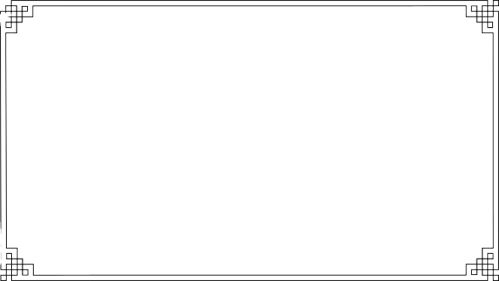
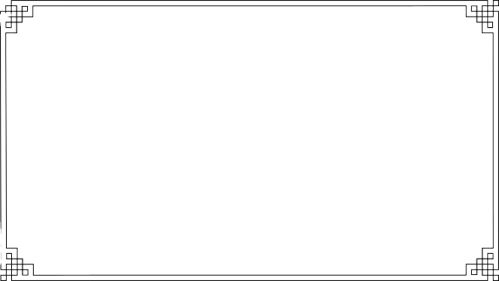

Fácil e Prática
Lasanha a Bolonhesa
Sabor Italiano
 

Ingredientes
- 1 Pacote de massas para Lasanha(tirinhas finas)
- 400 g de Mussarela ralada
- 300 g de Presunto ralado
- Molho
- 10 tomates sem semente
- Azeite
- Meio alho poró, cortado em rodelas
- 2 cebola roxa em cubos
- 4 dentes de alho normal amassado
- 200 g de azeitonas pretas em fatias/sem caroço
- Cheiro-verde
- 1 colher (sopa) de extrato de tomate
- 2 colheres (sopa) de açúcar
- Temperos de sua preferência
- Carne Moída
- 800 g de acém moído
- Tomilho
- Pimenta calabresa
- Noz-moscada
Modo de Preparo
Molho:
- Bata no liquidificador os tomates, junto com o azeite.
- Em uma panela, coloque o fundo de azeite, primeiro as cebolas roxas, alho poró e os temperos, por último o alho normal.
- Adicione os tomates batidos.
- Deixe cozinhar, inicialmente no fogo alto, assim que ferver, baixe o fogo e abra um pouco a tampa da panela.
- Quando o molho estiver encorpado, adicione 2 colheres de açúcar e 1 colher de extrato de tomate.
- Finalize com as azeitonas pretas e também com cheiro-verde, corrija o sal.
Carne Moída:
- Coloque azeite na panela e frite a carne moída
- Adicione todos os temperos.
- Quando estiver bem frita, passe essa carne para a panela do molho.
Montagem:
- Primeira camada de molho, segunda de massa, terceira de recheio (presunto e queijo), terminando com molho.
- E assim por diante, até encerrar a forma
- Finalize com queijo parmesão ralado
- Cubra com papel alumínio e leve ao forno por cerca de 40 minutos
- Coloque azeite na panela e frite a carne moída Adicione todos os temperos
- Quando estiver bem frita, passe essa carne para a panela do molho.